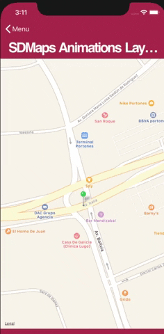

Enables or disables the Animation Layer (that allows viewing the animation of a point on the map) in a Grid whose Control Type is SD Maps. Values
Description
This property allows viewing an animation of a point on the map. It allows, for example, showing the route a vehicle will travel (Taxi, Uber, distributor).  It applies only to Grids whose Control Type property = SD Maps. When you set the Animations Layer property to True, the following properties will be enabled to set related details:
Another important property related to this kind of Grid whose Control Type property = SD Maps, is the Location Attribute property. Run-time/Design-timeThis property applies only at design-time. Samples
Consider the following transactions:
Car
{
CarId*
.....
}
CarLocation
{
CarId*
CarLocationId*
CarLocation (Data Type = GeoPoint)
}
Assume the existence of the following Procedure in order to assign data to the physical tables associated with the previous transactions:
new
CarId = 1
endnew
new
CarId = 1
CarLocationId = 1
CarLocation = geopoint.FromString('POINT (-56.088973921240267 -34.883211936027749)')
CarAnimationDuration = 2
endnew
new
CarId = 1
CarLocationId = 2
CarLocation = geopoint.FromString('POINT (-56.086742323339877 -34.883211936027749)')
CarAnimationDuration = 1
endnew
new
CarId = 1
CarLocationId = 3
CarLocation = geopoint.FromString('POINT (-56.083400226489289 -34.883156426543607)')
CarAnimationDuration = 3
endnew
Next, a Panel object is created, and a Grid is included to which the following properties are configured:
In the Grid conditions, the following is defined:
CarLocationId = &CurrentAnimationStep;
In the events section of the Panel for Smart Devices, the following is defined:
Event 'Refresh'
Composite
Grid1.Refresh()
¤tAnimationStep += 1
EndComposite
Endevent
Event ClientStart
¤tAnimationStep = 1
Endevent
Note: To fully view the animation, defining a zoom based in a range that reaches the points to animate is recommended. The following Grid properties must be configured for this purpose:
Therefore, the ClientStart event has to be modified to start the &Radio variable:
Event ClientStart
composite
¤tAnimationStep = 1
&Radio = 100
endcomposite
EndEvent
An alternative to set the duration of the animation Suppose that attributes are added to the CarLocation transaction in example 1 to store the duration and/or the final behavior of the animation:
CarLocation
{
CarID*
CarLocationId*
CarLocation (Data Type = GeoPoint)
CarAnimationDuration (Data Type = Numeric)
}
Since an attribute (CarAnimationDuration) contains the number of seconds that the animation lasts, you have to set the Grid property of the SDMaps control type:
AvailabilityIOS : Genexus V16 U5 or higher How to apply changesTo apply changes made by this property, do a Build with this Only of the object. Scope Platforms: Smart Devices(IOS) See Also
Maps Control Type
|